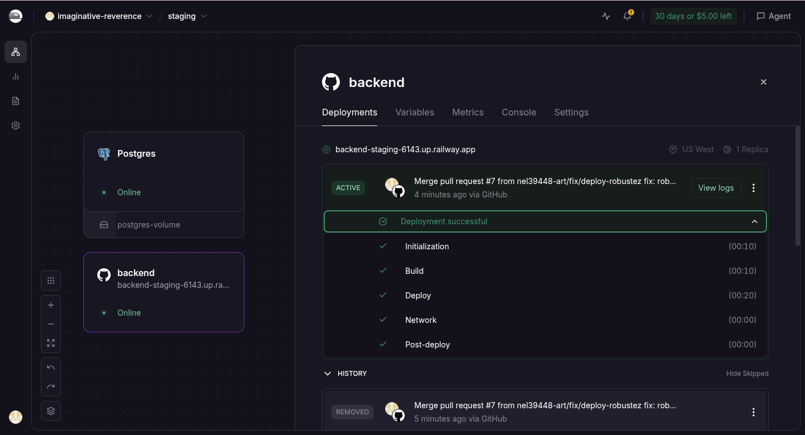
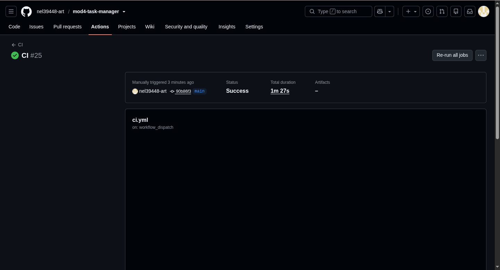
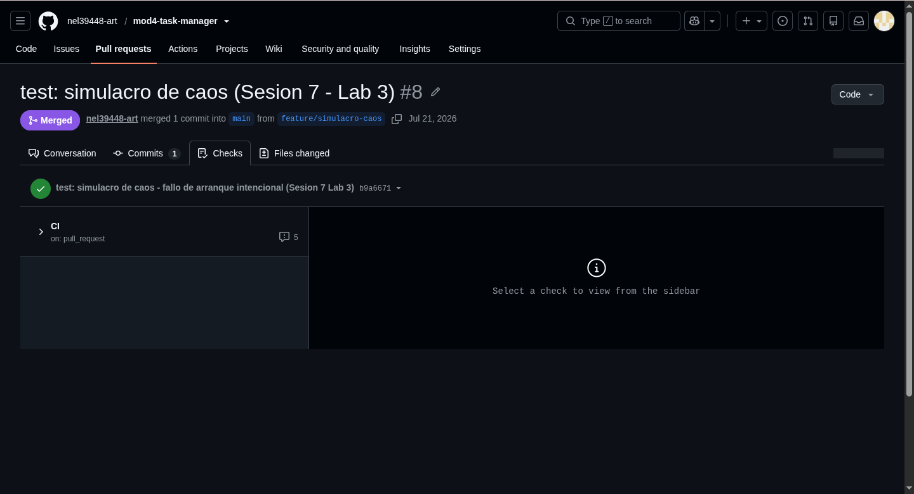
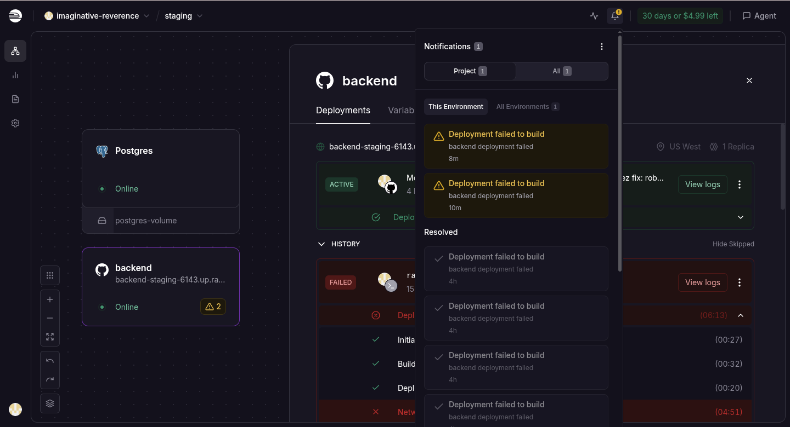
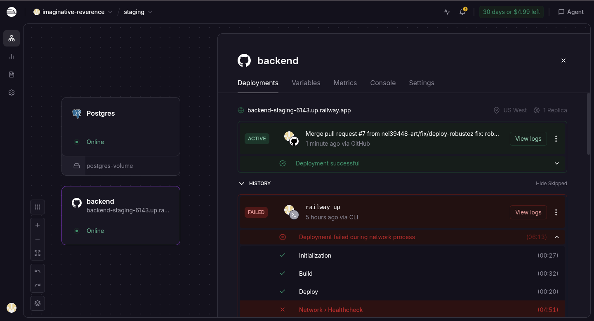

Esta sesión cierra el ciclo de CI/CD del módulo: la aplicación pasa de estar contenerizada a
desplegarse sola en la nube. Al terminar, cada vez que un cambio se integra a main,
el pipeline despliega la app a un ambiente de staging, pero solo si todos los
checks pasaron. Producción se despliega aparte, a mano y con confirmación. Y practiqué qué hacer
cuando un despliegue sale mal: diagnosticar por los logs y revertir.
Usé Railway como plataforma. El servicio que se despliega es el backend (Express + Prisma), con su propio PostgreSQL en cada ambiente. La URL pública responde la API.
Fue, con honestidad, la sesión más difícil del módulo: el código y el pipeline los tuve verdes rápido, pero conectar todo con Railway destapó una cadena larga de problemas de configuración que fui resolviendo uno por uno leyendo los logs. Documento esa cadena completa más adelante, porque ahí está el aprendizaje real.
Agregué un job deploy-staging al ci.yml que despliega a Railway con
el CLI, pero solo tras un push real a main (después de un merge) y solo si pasaron
los checks anteriores. El token de Railway se guarda como secret de GitHub, nunca en el código.
deploy-staging:
name: Deploy a Staging
needs: [lint, build, pruebas, e2e, migraciones]
if: github.ref == 'refs/heads/main' && github.event_name == 'push' && vars.DEPLOY_ENABLED == 'true'
runs-on: ubuntu-latest
steps:
- uses: actions/checkout@v4
- run: npm install -g @railway/cli
- run: railway up --service backend --environment staging --ci
env:
RAILWAY_TOKEN: ${{ secrets.RAILWAY_TOKEN }}
El needs extiende el quality gate hasta el despliegue: si cualquier check falla, el
deploy no ocurre. El if con github.event_name == 'push' evita que se
despliegue desde un Pull Request abierto. La variable DEPLOY_ENABLED permite dejar el
job escrito pero saltado hasta que Railway y el token están listos, para no romper el pipeline
mientras tanto.
También agregué al backend una ruta de salud, que Railway usa como healthcheck y que responde sin depender de la base:
app.get('/health', (req, res) => {
res.status(200).json({ status: 'ok' })
})
Tras conectar todo, el despliegue a staging quedó activo y sano. La aplicación responde en su
URL pública backend-staging-6143.up.railway.app.

$ curl https://backend-staging-6143.up.railway.app/health
{"status":"ok"}
$ curl https://backend-staging-6143.up.railway.app/tareas
[{"id":1,"titulo":"Tarea creada en staging (Railway)","completada":false}]
Separé staging y producción como dos ambientes independientes en Railway, cada uno con su propio PostgreSQL y sus propias variables. Producción no comparte base de datos con staging.
El despliegue a producción no es automático: se dispara a mano con un
workflow_dispatch que exige escribir la palabra DEPLOY. Es una fricción
intencional para que un despliegue a producción no ocurra por accidente.
deploy-produccion:
name: Deploy a Producción (manual)
if: github.event_name == 'workflow_dispatch' && github.event.inputs.confirmacion == 'DEPLOY' && vars.DEPLOY_ENABLED == 'true'
...
- run: railway up --service backend --environment production --ci
env:
RAILWAY_TOKEN: ${{ secrets.RAILWAY_TOKEN_PROD }}
Los tokens de Railway van por ambiente, así que producción usa su propio token
(RAILWAY_TOKEN_PROD), distinto al de staging. Ejecuté el despliegue manual desde la
pestaña Actions escribiendo DEPLOY, y terminó en verde.

on: workflow_dispatch, Status: Success. Un push normal a main nunca lo dispara.Comprobé que las bases de datos están separadas creando una tarea solo en producción y verificando que staging conserva otra distinta:
$ curl -X POST https://backend-production-824b.up.railway.app/tareas -d '{"titulo":"Tarea exclusiva de PRODUCCION"}'
{"id":1,"titulo":"Tarea exclusiva de PRODUCCION","completada":false}
$ curl .../produccion/tareas -> [{"titulo":"Tarea exclusiva de PRODUCCION", ...}]
$ curl .../staging/tareas -> [{"titulo":"Tarea creada en staging (Railway)", ...}]
Datos distintos en cada ambiente confirman que son bases independientes.
Practiqué el ciclo completo de un incidente: provocarlo, diagnosticarlo y revertirlo.
Introduje un fallo de arranque en el servidor. Para que pasara el quality gate (las pruebas y
el E2E corren sin base de datos) pero rompiera en Railway, hice que el fallo se dispare solo cuando
existe DATABASE_URL:
if (process.env.DATABASE_URL) {
throw new Error('fallo simulado para el simulacro de caos')
}
El Pull Request pasó los cinco checks y se fusionó a main, tal como anticipa la
guía: este tipo de error no lo detectan las pruebas.

Al fusionarse, staging desplegó la versión rota. El servidor se caía al arrancar, así que el healthcheck falló. En los logs de Railway encontré la causa exacta:
1/1 replicas never became healthy! Healthcheck failed! Error: fallo simulado para el simulacro de caos
Un detalle importante: el healthcheck protegió el servicio. Como la versión rota nunca llegó a estar sana, Railway no la promovió y mantuvo activa la versión anterior. La URL siguió respondiendo 200 durante todo el incidente. Un buen healthcheck evita que un despliegue defectuoso tumbe la aplicación.

Hice el rollback redesplegando la última versión sana desde el historial de Railway. El servicio volvió a estado Deployment successful.

Recién después corregí el error real por el flujo normal: revertí el throw en una
rama, abrí un Pull Request, pasaron los checks, se fusionó, y el nuevo despliegue a staging quedó
sano. La tarea que había creado antes seguía persistida en la base.
$ curl https://backend-staging-6143.up.railway.app/health
{"status":"ok"}
$ curl https://backend-staging-6143.up.railway.app/tareas
[{"id":1,"titulo":"Tarea creada en staging (Railway)","completada":false}]
Conectar el pipeline con Railway destapó una cadena de problemas de configuración. Cada uno se resolvió leyendo el error y ajustando una cosa. Los dejo documentados en orden, porque juntos son el verdadero aprendizaje de la sesión.
| # | Síntoma (lo que decía el error) | Causa | Solución |
|---|---|---|---|
| 1 | Invalid RAILWAY_TOKEN |
El token estaba incompleto al copiar o era del tipo equivocado. | Recrear un token de proyecto de Railway y copiar el valor completo. |
| 2 | Service not found |
Railway nombró el servicio con el nombre del repositorio, no backend. |
Renombrar el servicio a backend para que coincida con railway up --service backend. |
| 3 | Environment "production" not found |
El token estaba scopeado a otro ambiente. Los tokens de Railway van por ambiente. | Usar el token del ambiente correcto, y para staging + producción, un token por ambiente. |
| 4 | Environment variable not found: DATABASE_URL (Prisma P1012) |
El ambiente no tenía un PostgreSQL ni la variable de conexión. | Agregar un PostgreSQL al ambiente y definir DATABASE_URL en el backend. |
| 5 | La variable seguía faltando en el contenedor pese a haberla puesto. | Railway deja los cambios de variables en borrador hasta aplicarlos. | Hacer clic en Deploy / Apply changes para aplicar el cambio. |
| 6 | La variable quedaba vacía aunque estaba "aplicada". | La referencia ${{Postgres.DATABASE_URL}} no resolvía: la tarjeta del Postgres no se llamaba exactamente Postgres. |
Usar el valor literal de la conexión, copiado del servicio de PostgreSQL. |
| 7 | Application not found / healthcheck sin destino. |
El servicio no estaba expuesto (sin dominio) y el puerto no estaba alineado. | Generar un dominio público (puerto 8080) y dejar que Railway maneje la variable PORT. |
| 8 | Crash loop: migraba, pero el servidor nunca arrancaba (ninguna línea de "escuchando"). | Dos causas: un unhandled rejection podía tumbar el proceso, y el Start Command combinaba migraciones y arranque con &&, y el servidor no tomaba el relevo. |
Endurecer el código (.catch en la init, handler de unhandledRejection, escuchar en 0.0.0.0) y, en Railway, separar el Pre-deploy Command (prisma migrate deploy) del Start Command (node src/server.js). |
El problema 8 fue el que más costó y el que finalmente dejó la app viva: separar las migraciones del arranque, en fases distintas, hizo que el servidor sí se levantara y el healthcheck pasara a verde. Una vez resuelto en staging, montar producción fue directo, porque ya sabía exactamente qué hacer.
El pipeline y el código fueron la parte fácil; lo difícil fue el diálogo con la plataforma de despliegue. Cada error de Railway pedía leer el log con calma y cambiar una sola cosa. Esa disciplina de diagnóstico por logs es, en el fondo, la misma habilidad que pide el Simulacro de Caos, y terminé practicándola durante toda la sesión, no solo en el Laboratorio 3.
Dos aprendizajes se me quedaron grabados. El primero: un buen healthcheck es una red de seguridad real; cuando desplegué código roto a propósito, la aplicación no se cayó, porque Railway se negó a promover una versión que no respondía. El segundo: las migraciones y el arranque del servidor deben correr en fases separadas, no encadenados en un solo comando.
El resultado es el ciclo de CI/CD cerrado: el código se prueba, se conteneriza, guarda sus secretos, se despliega solo a staging tras cada cambio aprobado, se promueve a producción con una decisión manual, y se puede revertir en segundos.
| Requisito | Estado |
|---|---|
El pipeline despliega automáticamente a staging tras cada merge a main, solo si pasaron los checks | Cumplido (Figura 1) |
| Staging y producción son ambientes separados, con sus propias variables y base de datos | Cumplido (bases separadas verificadas) |
| El despliegue a producción requiere un disparo manual explícito | Cumplido (Figura 2) |
El servicio tiene una ruta /health como healthcheck en Railway | Cumplido |
| Provoqué un despliegue defectuoso y lo diagnostiqué con logs y healthcheck | Cumplido (Figuras 3 y 4) |
| Ejecuté un rollback exitoso y luego corregí el error por el flujo normal | Cumplido (Figura 5) |